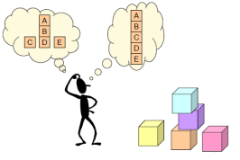

GENERALIDADES DEL PENSAMIENTO
¿QUÉ ES EL PENSAMIENTO?
Es el reflejo de la realisdad por medio de la palabra que va más allá de laspercepciones y de las sensaciones
basándose en la generalización ya que el sujetotiene posibilidad de sacar conclusiones sobre aquello que no
percibe inmediatamente.
• Pensamiento: fenómeno psicológico racional, objetivo y externo derivado delpensar
para la solución de
problemas que nos aquejan día tras día.
Pensamiento: es la actividad y creación de la mente, dícese de todo aquello que estraído a existencia
mediante la actividad del intelecto.
El pensamiento se podría definir como imágenes, ensoñaciones o esa voz
interiorque nos acompaña durante el día y en la noche en forma de sueños. La estructura del pensamiento o
los patrones cognitivos son: el andamiaje mental sobre el queconceptualizamos nuestra experiencia.
• Pensar:
Formarse ideas en la mente. Reflexionar. Proceso mental intencionado, resuelto y orientado hacia un
objetivo, o sí se prefiere,
fin expreso de hacer realidad algún objetivo específico. Su función relevante es la resolución de problemas
y razonar.
• Imagen: son las representaciones virtuales, desde su concepción acerca del
proceso psicológico racional,
subjetivo e interno de conocer, comprender, juzgar y razonar los procesos, objetivos y hechos.
• Lenguaje: es la función de expresión del pensamiento en forma oral o escrita
para la comunicación y el
entendimiento. Nos plantea dos definiciones de pensamiento, una de las cuales se relaciona directamente con
la resolución de problemas.
CARACTERISTICAS:
1) Es un proceso cognoscitivo superior se define como la facultad de un ser vivo para
procesar información a partir de la percepción.
2) Surge del conocimiento sensorial que son Vista, Tacto, Gusto y Olfato.
3) Es un proceso simbólico porque utiliza representaciones como Imágenes, Ideas,
Conceptos, Juicios y Otros.
4) Tiene como medio de expresión el lenguaje Oral y Escrito.
5) Establece relaciones de Semejanza, Diferencia, Casualidad, Efecto, Espacio,
Tiempo.
6) Permite al Hombre evaluar y solucionar problemas.
7) El pensamiento es lo que cada día individuo posee y lo va desarrollando conforme
va aprendiendo.
8) El pensar lógico se caracteriza porque opera mediante conceptos y
razonamientos.
9) El pensamiento es simplemente el arte de ordenar las matemáticas, y expresarlas
a través del sistema lingüístico.
1
0) Se presenta como una totalidad coherente y organizada.
TIPOS:
Existen distintos tipos o clases de pensamientos que son:
Pensamiento inductivo:
Aquí se razona a partir de casos particulares para
llegar
a lo
general.
Pensamiento deductivo:
Este, en cambio, llega a afirmaciones sobre
casos
particulares, partiendo de categorías generales. De esta manera, se infiere una
conclusión a partir de una o más premisas.

Pensamiento analítico:
En este, se llega a comprender una situación
particular
mediante la división de la misma en fragmentos o estableciendo implicaciones entre varias
situaciones.
Pensamiento divergente:
En esta clase de pensamiento lo que se
producen son laS
respuestas u opciones posibles
frente a un reto o pregunta abierta.
Pensamiento convergente:
Este, en cambio, elige entre diversas
opciones para
llegar a una conclusión.
Pensamiento suave:
Es aquel pensamiento difuso, aproximado,
metafórico y que
hasta puede llegar a ser contradictorio. Suele ser útil en aquellos momentos en los
que se buscan ideas nuevas, conocidos bajo el nombre de la fase de incubación.
Pensamiento duro:
A diferencia del pensamiento suave, en este los
conceptos son
concretos, coherentes, lógicos, precisos y libres de ambigüedades.

Pensamiento synvergente:
Esta palabra alude al uso óptimo de los
hemisferios
izquierdos y derechos del cerebro.

Pensamiento Lógico:
El pensamiento vertical o lógico se caracteriza por el análisis y el razonamiento; y
nos ayuda a desarrollar nuestra lógica, mediante el análisis deductivo y la disciplina
del razonamiento, ya que se desprende de las relaciones entre los objetos y procede de la propia
elaboración del
individuo; y surge a través de la coordinación de las relaciones que previamente ha creado entre los
objetos.

Pensamiento vertical, convencional o racional:
Es aquel que se desprende de la
relación entre los objetos y procede de la elaboración del individuo al interactuar
con el medio ambiente.
Se caracteriza por ser:
* Preciso y exacto al basarse en datos probables o hechos.
*Analítico:
divide los componentes en partes.
*Racional:
sigue reglas y es secuencial (paso a paso).
DIFERENCIAS ENTRE PENSAMIENTO LATERAL Y VERTICAL
PENSAMIENTO VERTICAL
* Selectivo
* Se mueve si hay una dirección
*Análitico
*Secuencial enas ideas
* Se usa la negación para bloquear lo latearal
PENSAMIENTO LATREAL
*Creador
*Se mueve para crear nuevas direcciones
*Provocativo
*"Ideas a saltos"
*No se rechaza ningún camino
* No es preciso que lo sea
DIFERENCIA ENTRE CONVERGETE Y DIVERGENTE
CONVERGENTE
*Busca lo cierto, lo correcto
*Utiliza las secuecias ABCD
*Se mueve co propósitos definidos
*Respode aun proposito finito
DIVERGENTE
*Rompe las estructuras existentes
*Se inquieta pir lo nuevo
*Utiliza la secuecia ABDC o DCBA
*Incursioa nuevas maneras
DIFERENCIA ENTRE PENSAMIENTO SUEAVE Y DURO
Pensamiento suave
*Metáfora
*Humor
*Juego
*Difuso
Pensamiento duro
*lógica
*razon
*Centrado
PROCESOS DE EXPASIÓN Y CONTRACCIÓN DE IDEAS
EXPANSIÓN DE IDEAS
Ayuda a utilizar la mente con efectividad, apertura, flexibilidad, oportunidad
y pertinencia; de acuerdo a un propósito determinado.
CONSIDERAR EXTREMOS
Significa pensar enideas que se contraponen.
§ Reflexionar sobre las ventajas y desventajas de la situación.
§ Pensar en lo adecuado o inadecuado de la situación.
§ Visualizar los riesgos y las oportunidades de una decisión.
§ Considerar lo útil o inútil de la decisión.
CONSIDERAR VARIABLES
Son características con valores cualitativos y cuantitativos que deben ser consideradas
antes de tomar una decisión para el cumplimiento de nuestro propósito y logro de
metas.
Variables Cualitativas:Hambre, Belleza, Ignorancia
Variables Cuantitativas:
Preso , Temperatura, Velocidad ,Densidad
.
CONSIDERAR CONSECUENCIAS
Consecuencias a corto plazo: se presenta al poco tiempo de ocurrir el
hecho.
Consecuencias a largo plazo: son las que se presentan más tarde.
CONSIDERRAR ALTERNATIVAS
Nos permite identificar posibles explicaciones de un hecho o situación y nos ayuda a
encontrar posibles cursos de acción o posibles opciones al hacer una selección.
§ Posibles soluciones
§ Explicaciones
§ Cursos de acción
CONSIDERAR PUNTO DE VISTA
El proceso de considerar otros Puntos de Vista nos invita a tomar en cuenta la opinión y el sentir de los
demás y
a pensar que no estamos solos, que lo que hacemos de alguna manera afecta a otras personas.
CONTRACCIÓN DE IDEAS
Propicia el desarrollo de hábitos productivos de la mente de pensar y actuar y para
valorar los logros alcanzados.
REGLAS
Características de las Reglas
§ Todas las reglas tienen un propósito determinado.
§ Toda regla expresa un deber, una obligación.
§ Las reglas deben especificar en el enunciado a quien están dirigidas, si es a un
grupo de personas o a todas personas de una población determinada.
§ Toda regla incluye en su enunciado una variable o una característica de la
variable.
§ Las reglas nos ayudan a evitar confusiones o ambigüedades y facilitan la
organización y la ejecución de cualquier actividad.
Procedimiento para elaborar reglas
1. Definir el propósito de la regla.
2. Identificar la variable o las características que permitan cumplir el propósito.
3. Identificar a quien va dirigida la regla.
4. Formular la regla.
5. Verificar
DEFINIR OBJETIVOS
Definimos objetivos antes de actuar, cuando queremos lograr algo. Si conocemos
nuestros objetivos sabemos dónde queremos llegar y cómo dirigir nuestras acciones
para alcanzar lo que deseamos.
CONSIDERAR PRIORIDADES
Pasos para aplicar el proceso considerar Prioridades:
1. Tomar en cuenta el propósito u objetivo de la selección.
2. Pensar en muchas ideas.
3. Seleccionar un criterio de prioridad.
4. Aplicar el criterio y seleccionar las ideas más importantes.
Procedimiento para Planificar
1. Identificar el problema
2. Definir el o los objetivos que se desean alcanzar
3. Considerar las consecuencias de lo sucedido
4. Considerar las variables relacionadas con la situación
5. Establecer algunas prioridades
6. Considerar las alternativas para resolver el problema
7. Seleccionar una alternativa
8. Elaborar una lista de actividades para planificar la alternativa y lograr los
objetivos.
9. Verificar los resultados o logros alcanzados y aplicar correctivos en caso
necesario.
PLANIFICACIÓN
Es un proceso que orienta a las acciones y conduce a la definición de los pasos por seguir
para lograr una meta.
Procedimiento para Planificar
1. Identificar el problema
2. Definir el o los objetivos que se desean alcanzar
3. Considerar las consecuencias de lo sucedido
4. Considerar las variables relacionadas con la situación
5. Establecer algunas prioridades
6. Considerar las alternativas para resolver el problema
7. Seleccionar una alternativa
8. Elaborar una lista de actividades para planificar la alternativa y lograr los
objetivos.
9. Verificar los resultados o logros alcanzados y aplicar correctivos en caso
necesario.
DESICIÓN
Procedimiento para tomar Decisiones
1. Definir el objetivo.
2. Considerar las variables.
3. Pensar en las variables más importantes.
4. Tomar en cuenta los puntos de vista de la familia con respecto a algunas variables
seleccionadas.
5. Hacer una lista entre todos de las posibles alternativas.
6. Tomar en cuenta los puntos de vista de la familia respecto a cuál consideran
que es la mejor alternativa.
7. Escoger las alternativas más convenientes.
8. Pensar en lo bueno y lo malo de cada alternativa
9. Seleccionar una alternativa
10. Verificar y repetir los pasos que sean necesarios.

PROCESOS BÁSICOS DEL PENSAMIENTO
PRIMERA ETAPA: Construcción del conocimiento
OBSERVACIÓN
Este es la operación de pensamiento que permite identificar características de un
objeto, hecho o situación.
PROCEDIMIENTO PARA LA OBSERVACIÓN
1. Definir el objetivo o propósito de la observación.
2. Identificar las variables que se corresponden con el propósito.
3. Determinar las características asociadas a cada variable.
4. Verificar el proceso y el producto.

DESCRIPCIÓN
El resultado de la observación se puede expresar en forma precisa y ordenada a través
del lenguaje verbal o escrito, permitiendo enumerar e integrar las características
observadas, en un todo significativo (Meza, 2004).
PROCEDIMIENTO PARA LA DESCRIPCIÓN
1. Definir el objetivo o propósito de la Descripción.
2. Identificar las variables que se corresponden con el propósito.
3. Determinar las características asociadas a cada variable.
4. Organizar las características con las preguntas para generar la descripción.
5. Verificar el proceso y el producto.
COMPARACIÓN
Es el proceso que consiste en identificar las características semejantes y diferentes, de
dos o más objetos o situaciones.
PROCEDIMIENTO PARA LA COMPARACIÓN
1. Definir el propósito.
2. Identificar las variables.
3. Identificar las características correspondientes a cada variable.
4. Identificar las diferencias, igualdades o semejanzas para cada variable.
5. Verificar el proceso y el producto.
RELACIÓN
La relación es el proceso que permite establecer nexos entre pares de características
correspondientes a una misma variable a partir de su comparación.
PROCEDIMIENTO PARA LA RELACIÓN
1. Definir el propósito.
2. Identificar la variable.
3. Identificar las características correspondientes a la variable.
4. Identificar la diferencia, igualdad o semejanza para la variable.
5. Formular la relación.
6. Verificar el proceso y el producto
SEGUNDA ETAPA: Organización del pensamiento
CLASIFICACIÓN
La Clasificación es el proceso mediante el cual podemos separar los elementos de un
conjunto en subconjuntos, de forma tal que todos los elementos de un subconjunto
comparten una característica correspondiente a una variable previamente seleccionada,
y cada subconjunto difiere de los demás en la característica que comparte de esa misma
variable.
PROCEDIMIENTO PARA CLASIFICAR
1. Definir el objetivo.
2. Observar los objetos.
3. Identificar las variables en las cuales tengamos semejanzas y diferencias.
4. Seleccionar la variable o criterio de clasificación.
5. Identificar los nombres o la denominación de las clases.
6. Formar las clases con sus respectivos elementos.
7. Verificar el proceso y el producto.
CRITERIOS DE UNA BUENA CLASIFICACIÓN
1. Todos los elementos del conjunto de partida deben estar clasificados.
2. Ningún elemento puede estar en dos clases a la vez.
SECUENCIA
Una secuencia es una sucesión de estados, símbolos o características relacionadas con
un objeto, situación o suceso que cambia en función de una o más variables.
Toda secuencia implica un orden que depende de la variable que define el cambio. Esta
variable que permite establecer la secuencia constituye un criterio para establecer el
orden de la secuencia.
ORDENAMIENTO
Es la secuencia que experimentan los objetos, sucesos y procesos como resultado de los
cambios que sufren.
Un orden es entonces la organización de los elementos de un conjunto, de acuerdo con
sus características asociadas a una variable, en una secuencia progresiva.
TIPOS DE ORDENAMIENTO
Natural: Está implícito en las características de las variables
cuantitativas, por
ejemplo, estatura, peso, temperatura.
Convencional: Provienen de la aplicación de condiciones establecidas por
el
hombre
para ordenar objetos, hechos o eventos del mundo; ejemplo, el alfabeto o los meses del
año.
PROCEDIMIENTO PARA ORDENAR SECUENCIAS DE ELEMENTOS DE UN CONJUNTO
1. Identifica la variable que determina el cambio, y la establece como criterio.
2. Observa las características de cada elemento correspondientes a la variable.
3. Identifica el tipo de cambio, creciente o decreciente.
4. Ordena los elementos del conjunto de acuerdo a su característica.
5. Verifica el proceso y el producto.

LA CLASIFICACIÓN JERÁRQUICA
La clasificación jerárquica es el proceso que nos permite separar los elementos de un
conjunto en clases y subclases de acuerdo a dos o más criterios de clasificación
simultáneamente.
PROCEDIMIENTO PARA HACER UNA CLASIFICACIÓN JERÁRQUICA
1. Define el propósito.
2. Observa el conjunto de elementos por clasificar e identifica sus variables y
características.
3. Compara las características y selecciona las variables de clasificación.
4. Ordena las variables de clasificación.
5. Clasifica con respecto a la primera variable y continua sucesivamente con las demás
variables, hasta agotarlas todas; conforme clasificas, elabora un diagrama o esquema de
la jerarquía.
6. Verifica el proceso y el producto.
TERCERA ETAPA: Integración y Juicio Critico
ANÁLISIS
Es un proceso u operación de pensamiento que implica la descomposición o división de
objetos, situaciones o ideas en las partes que lo constituyen. Esta división es un proceso
sistemático y organizado que facilita la comprensión del mundo que nos rodea.
Todo análisis depende de la meta o propósito que se desea lograr.
SÍNTESIS
Es el proceso mediante el cual se integran las partes, las propiedades y las relaciones de
un conjunto delimitado para formar un todo significativo.
TIPOS DE SÍNTESIS
Cerrada: El auto solo puede incorporar las partes,elementos o realciones
que
dispone para elaborar el producto final.
Abierta: El autor ,además de los eleementos que dispone,puede incorporar
conceptos ,inferencias o suposiciones de su propia cración para buscarlo que se propone.
EVALUACIÓN
El proceso mediante el cual una persona juzga o emite un juicio de valor acerca de un
objeto, hecho o situación, se denomina evaluación.
Para evaluar un objeto, hecho o situación, se necesita analizar el objeto, hecho o
situación y tener un conjunto de criterios que sirvan de base para emitir los juicios de
valor.
Procedimiento para evaluar
1. Define el propósito para evaluación
2. Describe la situacióndeseada o ideal
3. Define los criterios de comparación o de evaluiación.
4. Describe el objeto o situación a evaluar.
5. Comparar la situación deseada y la evaluada.
6. Identificar conformidades o discrepancias y emite juicios de valor.
7. Verifica el proceso y el producto.